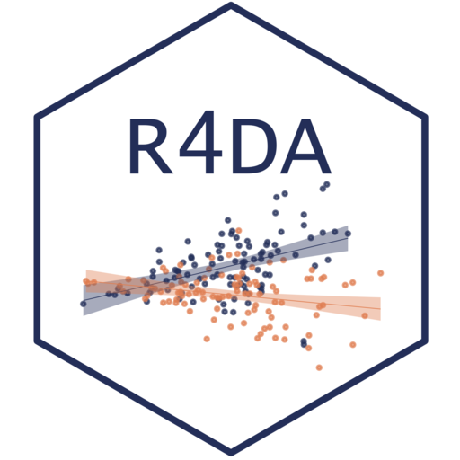

Main Take Aways
- Regression model represents our idea of the data-generation process (DAG) in the systematic component, everything else is captured in the error term
- You should control for confounders, but not mediators and colliders \(\Rightarrow\) controls should be related to both dependent and main independent variables
- When justifying the choice of control variables, mention both how they are related to main explanatory variable and the dependent variable
- When interpreting the coefficients in multiple linear regression, remember that they are average effects holding all other variables constant
- You do not need to interpret the coefficients of control variables (at least as estimated effects of that variable on dependent variable)
